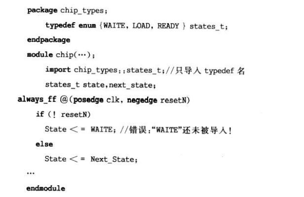
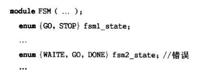
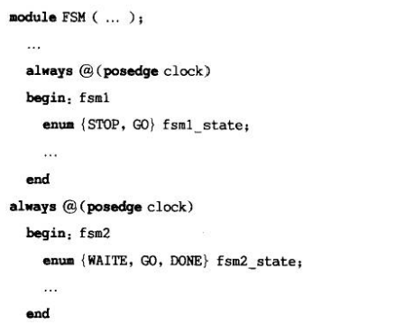

SystemVerilog_用户自定义和枚举数据类型
本文最后更新于：2024年5月8日 晚上
- 参考
1. 用户自定义类型
Verilog 并没有提供用户自行扩展 变量和线网 类型的机制。
System Verilog 增加了用户定义新变量和线网类型的能力。
System Verilog 同C一样，可以使用typedef关键字来建立用户自定义类型。
其允许使用现有的数据类型建立新的数据类型；新的数据类型定义后，可以声明这个类型的变量。
1
2
3typedef int unsigned uint;
...
uint a,b;
typedef 命名习惯是使用_t来作为用户自定义类型的结尾。
1.1 局部 typedef 声明
用户自定义类型可以在局部定义，也可以在编译单元域进行外部定义。
对于局部的typedef声明，其定义可以在模块内部或设计的接口部分。
举例如下，其中nibble自定义类型只能被模块内部看到，其它模块和接口不受其影响。
1
2
3
4
5module alu(...);
typedef logic [3:0] nibble;
nibble opA,opB;
...
endmodule
1.2 共享typedef定义
如果用户自定义类型会在很多模型中都被使用，那么typedef可以在包内声明。
可以通过这篇博客中介绍的 包的内容引用 方法使用用户自定义类型。
举例如下
1
2
3
4
5
6
7
8
9
10
11
12
13
14
15
16
17package chip_types;
`ifdef TWO_STATE
typedef bit dtype_t;
`else
typedef logic dtype_t;
`endif
endpackage
module counter
(output chip_types::dtype_t[15:0] count,
input chip_type::dtype_t clock,resetN);
always@(posedge clock,negedge resetN)
if(! resetN)count<=0;
else
count<=count+1;
endmodule
typedef 也可以在编译单元域中声明，这样模块在每次使用时，不需要再引用包名。
举例如下
1
2
3
4
5
6
7
8
9
10
11
12
13
14
15
16
17
18package chip_types;
`ifdef TWO_STATE
typedef bit dtype_t;
`else
typedef logic dtype_t;
`endif
endpackage
import chip_types::dtype_t;//导入定义到$unit
module counter
(output dtype_t[15:0]count,
input dtype_t clock,resetN);
always(posedge clock, negedge resetN)
if(!resetN) count<=0;
e1se count<=count+1;
endmodule
2. 枚举数据类型
在Verilog中，没有枚举类型。为了给数值创建一个标签，需要使用 parameter/`define 来表示每个值。
- 以状态机为例，常用parameter表示几个状态值；同时需要声明变量来使用这些常数值。
- 如声明 reg [3:0] state，但是并没有什么办法来限制state的值一定在声明的几个常数中。
- 虽然可以添加"full case" 编译指令来通知综合工具，让状态变量只使用case列表中的常数值。但编译指令不影响仿真，会导致仿真与综合结果不相同。
- 以状态机为例，常用parameter表示几个状态值；同时需要声明变量来使用这些常数值。
在System Verilog 中，增加了枚举数据类型声明，使用enum关键字。
1
enum {WAITE,LOAD,STORE}State,NextState;
枚举类型会限制数值的合法集合，不会出现和Verilog一样超出列表常数值的情况。
如果是从包中导入枚举类型，如果只导入枚举类型定义名，并不会自动导入枚举值标签，在使用时就可能会出现错误。
举例如下
 需要显式的导入每个标签，或者使用通配符导入整个包。
枚举类型 标签序列
- state：单个标签
- state[N]：标签序列，state0...stateN
- state[N:M]：标签序列，stateN...stateM
枚举类型列表中的标签在其作用域内必须是唯一的。
不可以在同一个作用域内两个枚举类型列表中都包含相同的标签，如下所示。
 可以包含枚举类型声明的作用域包括：
- 编译单元、模块、任务、函数。
- 接口、程序、begin...end、fork...join块。
上面代码的错误可以将相同标签置于不同作用域中来修正，如下图所示。

枚举类型的基类
枚举类型的默认基类是int，其是32bit两态类型。
同样也支持显式声明，如下：
1
2enum bit {TRUE,FALSE} Boolean;
enum logic[1:0] {WAIT,LOAD,READY} state;在枚举类型声明时，可以同时进行初始化，但初始化值应与显式声明位宽相匹配。
枚举类型操作的强类型检验
声明的枚举类型变量只可以进行以下赋值：
- 枚举类型列表中的一个标签
- 同类枚举类型的其它变量
- 通过cast转换成枚举类型变量的数值
举例如下
1
2
3
4
5
6
7
8
9
10typedef enum {WAIT,LOAD,READY} states_t;
states_t state,next_state;
int foo;
(1) state = next_state; //合法
(2) foo = state+1; //合法
(3) state = foo+1; //非法赋值，因为不是同一个枚举类型
(4) next_state = state+1; //非法赋值，state+1得到的结果是int类型，int类型赋值给枚举类型。
(5) state++; //非法赋值
(6) next_state+= state; //非法赋值
表达式强制转换为枚举类型
前面介绍的第(4)种情况，可以使用强制转换操作符或者动态$cast()系统函数。
1
2next_state = state_t(state+1); //合法
$cast(next_state,state+1); //合法- 其中强制转换符不会检查转换表达式结果是否是合法值。但$cast()会对其进行检查，具体可见这篇博客。
枚举类型的专用系统任务和方法
- System Verilog
提供了一些内置函数，被称为方法，可以轻松访问枚举类型列表中的值。举例如下：
- <枚举变量名>.first：返回枚举列表中的第一个成员的值。
- .last：返回列表中最后一个成员的值。
- .next<N>：返回枚举列表中下一个（后面第N个）成员的值。
- .prev<N>：返回枚举列表中前一个（前面第N个）成员的值。
- .num：返回枚举列表中元素的个数。
- .name：返回列表中当前值对应的字符串，如果不在枚举变量中，返回空字符串。
- System Verilog
提供了一些内置函数，被称为方法，可以轻松访问枚举类型列表中的值。举例如下：